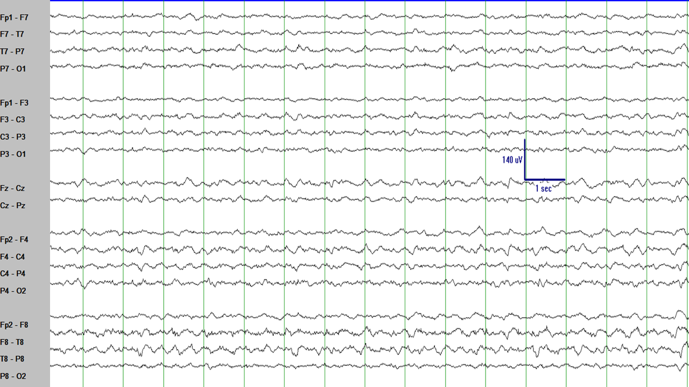

Las crisis epilépticas son el rasgo más característico de la epilepsia.
En muchos pacientes las crisis epilépticas son (afortunadamente)
raras y, por lo tanto, raramente capturadas en el EEG. De todas formas, cuando las crisis epilépticas se capturan en el EEG, proveen información
sobre el tipo de crisis epiléptica, su duración su lateralización y la potencial localización del foco de la crisis epiléptica. Además (si el paciente
aparece en el video durante la crisis epiléptica), también da información sobre la correlación entre los hallazgos del EEG y la semiología clínica.
Algunas crisis epilépticas o combinación de crisis epilépticas ayudan a definir el síndrome epiléptico del paciente.
En un mundo perfecto, todas las crisis epilépticas tendrían los mismos rasgos característicos y serían fáciles de identificar cuando ocurrieran.
Por supuesto, en el mundo real no hay características universales que permitan definir una crisis epiléptica y hay muchos patrones diferentes en el EEG
que se pueden encontrar durante una crisis epiléptica.
Intentemos aprender los patrones más típicos.
CRISIS EPILÉPTICAS CON COMPLEJOS DE PUNTA-ONDA GENERALIZADOS
El comienzo de este segmento del EEG muestra un artefacto muscular en las regiones temporales e, incluso, lo que parece ser un
ritmo posterior dominante. Tras aproximadamente el quinto segundo, algo rompe abruptamente el ritmo y continúa rítmicamente a aproximadamente 3 Hz.
Esta es una crisis de ausencia típica con el patrón típico de complejos punta-onda a aproximadamente 3 Hz. Probablemente es difícil de identificar
a este voltaje.
Aumentando el voltaje por cada milímetro en vertical en el mismo segmento del EEG hace más fácil identificar
los complejos punta-onda a 3 Hz.
Aumentando incluso más el voltaje por cada milímetro en vertical en el mismo segmento del EEG hace incluso más claro
el patrón de aproximadamente 3 complejos punta-onda por segundo que es característico de las crisis de ausencia típicas. Fíjate en el marcador de
voltaje azul en cada figura: muestra que el voltaje de esos complejos punta-onda es muy alto.
La crisis epiléptica que comenzó en el segmento de EEG previo continuó en la siguiente página y terminó abruptamente como se muestra en este segmento del EEG.
Las crisis de ausencia típicas se caracterizan por un comienzo generalizado con complejos punta-onda a 3 Hz. El comienzo y final de esas crisis epilépticas
es típicamente abrupto con una transición brusca entre el EEG normal y la crisis epiléptica. Por esto, las crisis de ausencia típicas son relativamente
fáciles de identificar. Son tan típicas y características que se muestran como el primer ejemplo de una crisis epiléptica en los libros de texto en la
facultad de medicina.
Incluso este patrón típico tiene un par de características que son algo irregulares. Algunas veces, la crisis epiléptica
comienza con un inicio de 1-2 segundos que puede ser más focal o lateralizado. También, la frecuencia no siempre es de 3 Hz, pero puede evolucionar de
aproximadamente 4 Hz al comienzo de la crisis epiléptica a aproximadamente 2 Hz hacia el final de la crisis epiléptica.
La misma crisis epiléptica mostrada arriba tiene un inicio que aparece más prominente en el hemisferio izquierdo
que en el hemisferio derecho (corchetes rojos). También muestra que al comienzo, la crisis epiléptica tiende a tener complejos
punta-onda más rápidos, cercanos a los 4 Hz.
La frecuencia tiende a enlentecerse y, hacia el final de la crisis epiléptica es cercano a los 2 Hz.
CRISIS EPILÉPTICAS CON (POLI)PUNTAS RÁPIDAS GENERALIZADAS
Después de aproximadamente el tercer segundo, algo rompe abruptamente el ritmo. Son puntas generalizadas
a una frecuencia rápida de aproximadamente 10-20 Hz.
La crisis epiléptica en el segmento de EEG previo continúa y finaliza abruptamente como se muestra en este segmento del EEG.
Otro ejemplo de este tipo de crisis epiléptica en el EEG. Frecuentemente, aunque no siempre, la correlación clínica
de esta crisis epiléptica es una crisis generalizada tónica.
Un espasmo infantil puede considerarse como una variante de una crisis epiléptica tónica generalizada. Fíjate en el
ritmo rápido y la atenuación de voltaje que ocurre durante la fase señalada por el corchete rojo y diferencia el espasmo infantil del
(muy anormal) resto del EEG. Intenta fijarte en cómo el patrón de espasmo infantil es similar al patrón de la crisis tónica generalizada.
CRISIS EPILÉPTICAS FOCALES CON EVOLUCIÓN EN FRECUENCIA, AMPLITUD, Y ÁREA AFECTADA
Las crisis epilépticas focales están entre las que más claramente se ve la evolución en frecuencia, amplitud, y área afectada.
Tras aproximadamente el tercer segundo, hay alguna actividad rítmica en los canales posteriores del
hemisferio izquierdo (principalmente T7-P7, P7-O1, C3-P3, P3-O1, y Cz-Pz).
Esta actividad rítmica persiste durante algunos segundos con una evolución mínima en frecuencia, amplitud, y área afectada.
La actividad rítmica continúa con mínima evolución en frecuencia, amplitud, y área afectada.
Hacia el final de este segmento del EEG la frecuencia se enlentece y la amplitud aumenta ligeramente. El área afectada
incluye canales del EEG más anteriores.
El enlentecimiento en la frecuencia y el aumento de amplitud es más claro aún en este segmento.
Además, la actividad rítmica se extiende a canales más anteriores en el hemisferio izquierdo.
Al final de la crisis epiléptica, la frecuencia es mucho más lenta (2-3 Hz) que al principio, la amplitud es mucho
más alta, y el área afectada incluye el hemisferio izquierdo completo y algunos canales del hemisferio derecho. Compara con el segmento
del EEG que muestra el inicio de la crisis epiléptica. Esto es, la evolución en frecuencia, amplitud, y área afectada son los rasgos definitorios de la mayoría de crisis epilépticas.
El lóbulo temporal es un foco frecuente de crisis epilépticas, tanto en adultos como en niños. Fíjate en la evolución de la ritmicidad en la región temporal derecha en la crisis epiléptica de abajo.
Incremento de actividad semi-rítmica en T8 y, en menor medida, C4.

Lento incremento de actividad semi-rítmica con una frecuencia progresivamente más lenta y un aumento progresivo de la amplitud
en la región temporal derecha.
El enlentecimiento, aumento de amplitud, y aumento del área afectada son evidentes ya.
Cambios de frecuencia y amplitud durante la crisis epiléptica con periodos de enlentecimiento y periodos de
aceleración: La evolución es una de las características principales de una crisis epiléptica.
Sigue la evolución de una crisis epiléptica abajo. ¿Ves la evolución en frecuencia, amplitud, y área afectada?
La evolución es una de las características definitorias de las crisis epilépticas.
RESUMEN
Tras revisar esta página has aprendido un poco sobre los patrones del EEG más frecuentemente encontrados en una crisis epiléptica.
Hay muchas variaciones de los patrones explicados arriba (por ejemplo, crisis epilépticas con polipuntas rápidas pueden ser focales, crisis
focales pueden generalizar, etc.). También hay muchos otros patrones en el EEG que aparecen con las crisis epilépticas. De todas formas,
aprender los patrones explicados arriba es un buen primer paso.
Has aprendido que una crisis epiléptica evoluciona en frecuencia (cambios de ritmo), amplitud (el patrón en el EEG cambia de amplitud), y
el área afectada tiende a cambiar (típicamente, aumentar) durante la crisis epiléptica.
La evolución es probablemente la característica más definitoria de una crisis epiléptica y es común a todos los tipos de crisis epilépticas.